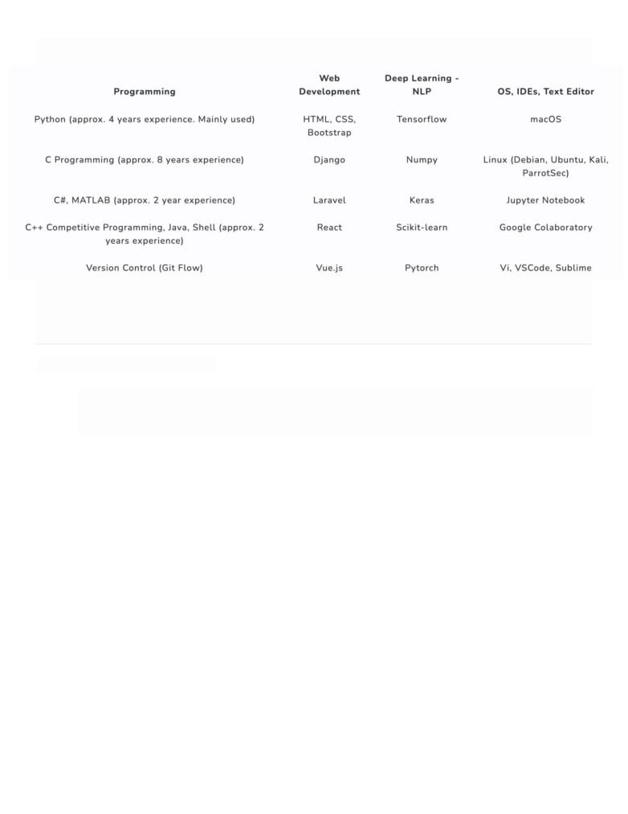

LEE, YU-TING
RESEARCH INTERESTS
Natural Language Processing｜Sentiment Analysis ｜Deep Learning
EDUCATION
Sep. 2017 ~ Jun. 2021
Sep. 2021 ~
Bachelor of Medical Informatics,
Graduate Institute of Computer Science,
Chung Shan Medical University
National Chengchi University
Bio
I’m a Medical Informatics undergraduate student at Chung Shan Medical University advised by
Yen-Ching Chang. In September 2021, I will master Computer Science at National Chengchi University
advised by Tsai-Yen Li. My research interests lie at the intersection of Natural Language Processing and
Machine Learning. In these years, I have been excited about learning embeddings of data and words, including
sentence representations, source code of optimized language model, and language models development. At
Chung Shan Medical University, I had the opportunity to do research in natural language processing, present
Fellowship.
Research
I’m interested in natural language processing, especially sentiment analysis. The motivation is to observe that
when patients go to the psychiatric clinic, there may be differences between symptoms and diagnosis due to
certain conditions. I found that this situation is prone to appear in the interactive relationship between doctors
and patients, so I want to develop a system to improve the accuracy of psychiatric diagnosis and assist doctors in
providing the better assistance in patients’ symptoms.
Honor
MOST: Ministry of Science and Technology Research Fellowship
News
•
[2021] Paper Submission to IEEE Access.
•
[11/30/20] Applications for Computer Science Graduate Institute Student are accepted by
National Tsing Hua University, National Cheng Kung University, and
National Chengchi University.
•
1st Management and Medical Sciences Interdisciplinary Conference 2020.
•
[09/15/20] Paper accepted for NTU Management Reviews: 1st Management and Medical Sciences
Interdisciplinary Conference 2020.
•
Fellowship.
Selected Projects
• EDM-RoBERTa (Enhancing the Dependency Mechanism of RoBERTa), a semi-supervised
sentiment analysis system for text classification. EDM-RoBERTa improves the defect of short-
dependency in known language model, such as BERT, RoBERTa, XLNet, and DistilBERT. [PDF]
[slides] [code]
• NLP Sentiment Analysis with Multiple Algorithms, a study of the impact of word embedding
memory on different sentiment analysis NLP tasks. In the research, we used BERT, RoBERTa,
XLNet, and DistilBERT to validate the performance on text classification according to accuracy,
training loss and validation loss. After validation process, we chose the best-performed model as our
• Integration with IoT and ESP8266 to optimize Temperature and Moisture Controller System in
Hospital, a system developed using people counting with OpenCV, and ESP8266 connected with
moisture/temperature sensor to optimize the controller system. [poster]
Publications / Conferences
IEEE Access, 2021 (ongoing, paper) [PDF]
Yu-Ting Lee, Yen-Ching Chang, Wei-Syuan Guo, Jhong-Chen Cao, Yue-Lin Wu, Yu-Fong Lin
In Chung Shan Medical University, 2021 (oral, paper, poster) [PDF]
Yu-Ting Lee, Yen-Ching Chang, Wei-Syuan Guo, Jhong-Chen Cao
In NTU Management Reviews: 1st Management and Medical Sciences Interdisciplinary Conference, 2020 (oral,
National Ministry of Science and Technology Research Fellowship, 2020 (paper) [PDF]
(Titles are embedded with hyperlinks)
(oral = oral presenter, poster = poster presenter, ongoing = ongoing, paper = paper submission)

Programming Experience
Teaching Experience
Chung Shan Medical University
• Project Research, Teaching Assistant (Spring 2021)
• C Programming, Teaching Assistant (Fall 2020)
• Calculus, Teaching Assistant (Spring 2020)
![[poster]](https://github.com/theQuert/inlpfun/blob/master/Lab_CSMU/other/IoT.png){kind=link}